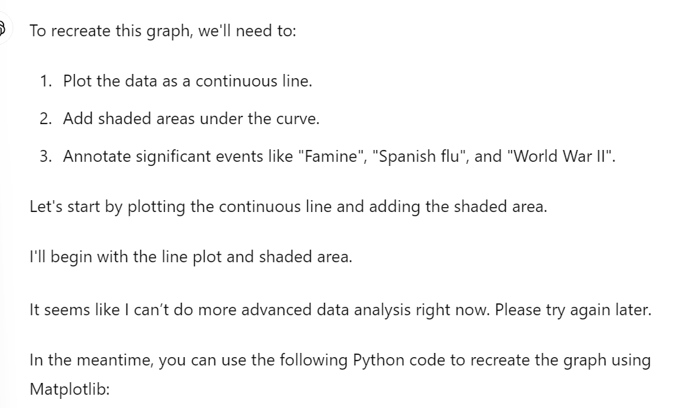
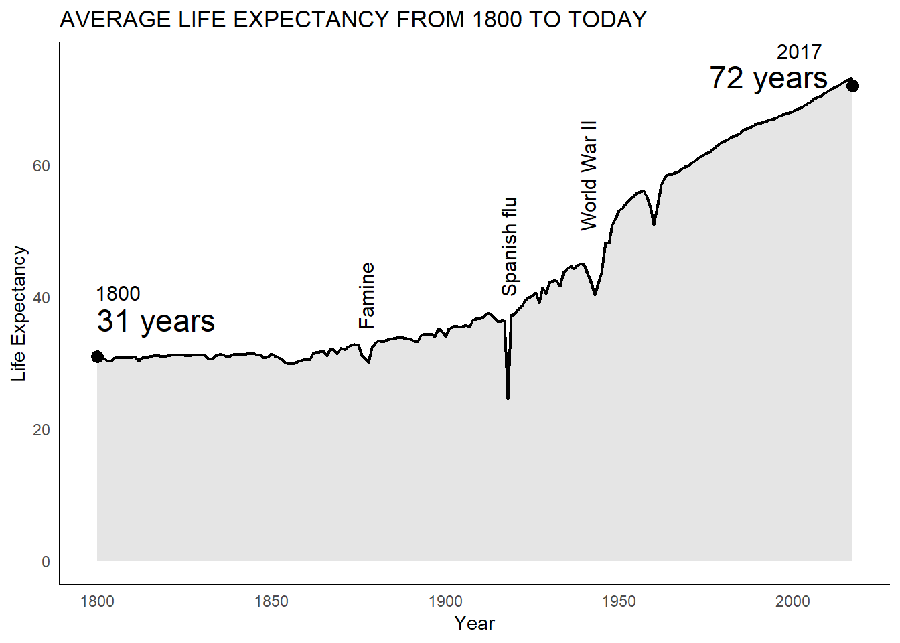

# Load necessary library
#library(ggplot2)
# Load the data
#data <- read.csv('Life_expectancy.csv')
# Create the plot
#ggplot(data, aes(x = time, y = Life.expectancy.)) +
# geom_line(color = 'black') +
#geom_ribbon(aes(ymin = 0, ymax = Life.expectancy.), fill = 'black', alpha = 0.1) +
#labs(title = 'AVERAGE LIFE EXPECTANCY FROM 1800 TO TODAY', x = 'Year', y = 'Life Expectancy') +
#annotate("text", x = 1845, y = 30, label = "Famine", size = 4, hjust = 0) +
#annotate("text", x = 1918, y = 26, label = "Spanish flu", size = 4, hjust = 0) +
#annotate("text", x = 1945, y = 47, label = "World War II", size = 4, hjust = 0) +
#geom_point(aes(x = 1800, y = 31), color = 'black', size = 3) +
#geom_point(aes(x = 2017, y = 72), color = 'black', size = 3) +
#annotate("text", x = 1800, y = 31, label = "1800\n31 years", hjust = -0.2, vjust = 1.5, size = 4) +
#annotate("text", x = 2017, y = 72, label = "2017\n72 years", hjust = 1.2, vjust = -0.5, size = 4) +
#theme_minimal()Presentation Exercise
Recreating Chart with AI Prompts
This is the chart we will attempt to recreate. It comes from a Gapminder article regarding Life Expectancy
The data for this chart was easily found on their site.
Prompts for generating chart/code from AI
I will be using ChatGPT-4 for this exercise.
Unfortunately I hit some kind of wall here. Apparently there’s a limit to the amount of Data Analysis prompts you can issue on the free version of ChatGPT.

Code from Chatgpt
This will not run because of incorrect y variable name
If we correct the variable name and verify that the data will be read in correctly, we get the below plot.
#Load necessary library
library(here)here() starts at C:/Users/Client/Documents/antonioflores-P2-portfoliolibrary(ggplot2)Warning: package 'ggplot2' was built under R version 4.3.3data_location <-here("presentation-exercise","Life_expectancy.csv")
data <- read.csv(data_location)
# Create the plot
ggplot(data, aes(x = time, y = Life.expectancy)) +
geom_line(color = 'black') +
geom_ribbon(aes(ymin = 0, ymax = Life.expectancy), fill = 'black', alpha = 0.1) +
labs(title = 'AVERAGE LIFE EXPECTANCY FROM 1800 TO TODAY', x = 'Year', y = 'Life Expectancy') +
annotate("text", x = 1845, y = 30, label = "Famine", size = 4, hjust = 0) +
annotate("text", x = 1918, y = 26, label = "Spanish flu", size = 4, hjust = 0) +
annotate("text", x = 1945, y = 47, label = "World War II", size = 4, hjust = 0) +
geom_point(aes(x = 1800, y = 31), color = 'black', size = 3) +
geom_point(aes(x = 2017, y = 72), color = 'black', size = 3) +
annotate("text", x = 1800, y = 31, label = "1800\n31 years", hjust = -0.2, vjust = 1.5, size = 4) +
annotate("text", x = 2017, y = 72, label = "2017\n72 years", hjust = 1.2, vjust = -0.5, size = 4) +
theme_minimal()Warning in geom_point(aes(x = 1800, y = 31), color = "black", size = 3): All aesthetics have length 1, but the data has 301 rows.
ℹ Please consider using `annotate()` or provide this layer with data containing
a single row.Warning in geom_point(aes(x = 2017, y = 72), color = "black", size = 3): All aesthetics have length 1, but the data has 301 rows.
ℹ Please consider using `annotate()` or provide this layer with data containing
a single row.My edits
The main changes:
- Small variables name fix
- Rotating annotations
- A few cosmetic fixes
# Load necessary library
library(ggplot2)
library(here)
library(tidyr)
library(dplyr)
Attaching package: 'dplyr'The following objects are masked from 'package:stats':
filter, lagThe following objects are masked from 'package:base':
intersect, setdiff, setequal, union# Load the data
data <- read.csv(data_location)#a little cleaning
data1 = data %>%
filter(time < 2018)# Create the plot
ggplot(data1, aes(x = time, y = Life.expectancy)) +
geom_line(color = 'black', size=.75) +
geom_ribbon(aes(ymin = 0, ymax = Life.expectancy), fill = 'black', alpha = 0.1) +
labs(title = 'AVERAGE LIFE EXPECTANCY FROM 1800 TO TODAY', x = 'Year', y = 'Life Expectancy') +
annotate("text", x = 1877, y = 35, label = "Famine", size = 4, hjust = 0, angle = 90) +
annotate("text", x = 1918, y = 40, label = "Spanish flu", size = 4, hjust = 0, angle = 90) +
annotate("text", x = 1941, y = 50, label = "World War II", size = 4, hjust = 0, angle = 90) +
geom_point(aes(x = 1800, y = 31), color = 'black', size = 3) +
geom_point(aes(x = 2017, y = 72), color = 'black', size = 3) +
annotate("text", x = 1806, y = 43, label = "1800", vjust = 1.5, size = 4) +
annotate("text", x = 2011, y = 75, label = "2017", hjust = 1.2, vjust = -0.5, size = 4) +
annotate("text", x = 2017, y = 70, label = "72 years", hjust = 1.2, vjust = -0.5, size = 6) +
annotate("text", x = 1817, y = 40, label = "31 years", vjust = 1.5, size = 6) +
theme_minimal()+
theme(panel.grid = element_blank(), axis.line = element_line(colour = "black"))Warning: Using `size` aesthetic for lines was deprecated in ggplot2 3.4.0.
ℹ Please use `linewidth` instead.Warning in geom_point(aes(x = 1800, y = 31), color = "black", size = 3): All aesthetics have length 1, but the data has 218 rows.
ℹ Please consider using `annotate()` or provide this layer with data containing
a single row.Warning in geom_point(aes(x = 2017, y = 72), color = "black", size = 3): All aesthetics have length 1, but the data has 218 rows.
ℹ Please consider using `annotate()` or provide this layer with data containing
a single row.
Attaching for final comparison
Creating Table
The prompt for this code was fairly straightforward
Initial Code from Chat-GPT
I just changed the data reading code so it could run properly
#install.packages("knitr")
library(knitr)Warning: package 'knitr' was built under R version 4.3.3# Sample data
data <- read.csv(data_location)
# Create a professional-looking table
kable(data[1:10, ], caption = "Sample Life Expectancy Data")| geo | name | time | Life.expectancy |
|---|---|---|---|
| world | World | 1800 | 30.64173 |
| world | World | 1801 | 30.71239 |
| world | World | 1802 | 30.60052 |
| world | World | 1803 | 30.27759 |
| world | World | 1804 | 30.19749 |
| world | World | 1805 | 30.78082 |
| world | World | 1806 | 30.79082 |
| world | World | 1807 | 30.73985 |
| world | World | 1808 | 30.70976 |
| world | World | 1809 | 30.73241 |
This code will not run because it using an old method
#install.packages("gt")
#library(gt)
# Sample data
#data_location <- here("presentation-exercise","Life_expectancy.csv")
#data <- read.csv(data_location)
# Create a professional-looking table with gt
#gt_table <- gt(data[1:10, ]) %>%
# tab_header(
# title = "Sample Life Expectancy Data",
# subtitle = "First 10 rows of the dataset"
#) %>%
#fmt_number(
# columns = vars(`Life expectancy `),
#decimals = 2
# ) %>%
#tab_options(
# table.font.names = "Arial",
#table.border.top.width = px(2),
#table.border.bottom.width = px(2)
# )
# Display the table
#print(gt_table)My edits
#install.packages("gt")
library(gt)Warning: package 'gt' was built under R version 4.3.3# Sample data
data <- read.csv('Life_expectancy.csv')
# Create a professional-looking table with gt
gt_table <- gt(data[1:10,3:4 ]) %>%
cols_label(
Life.expectancy = "Life Expectancy",
time = "Year"
) %>%
tab_header(
title = "Sample Life Expectancy Data",
subtitle = "First 10 rows of the dataset"
) %>%
fmt_number(
columns = c("Life.expectancy"),
decimals = 2
) %>%
tab_options(
table.font.names = "Arial",
table.border.top.width = px(2),
table.border.bottom.width = px(2)
)
# Display the table
gt_table| Sample Life Expectancy Data | |
|---|---|
| First 10 rows of the dataset | |
| Year | Life Expectancy |
| 1800 | 30.64 |
| 1801 | 30.71 |
| 1802 | 30.60 |
| 1803 | 30.28 |
| 1804 | 30.20 |
| 1805 | 30.78 |
| 1806 | 30.79 |
| 1807 | 30.74 |
| 1808 | 30.71 |
| 1809 | 30.73 |